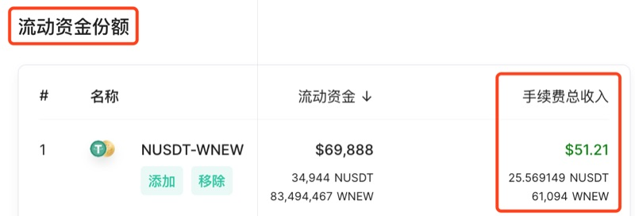

FAQ
What is NewSwap?
NewSwap is an application protocol built on Newton's NewChain, which realizes the exchange between NEW and the NRC6 token issued based on NewChain. Any two NRC6 tokens can also be exchanged on it.
Its characteristics are: system automatic pricing, fast and convenient exchange process, each transaction fee is automatically transferred to the liquidity provider, decentralized, safe and reliable, users can fully control their assets by controlling their own private keys, and the threshold is extremely low. it has global liquidity.
How does NewSwap work?
NewSwap is an automatic liquidity agreement. There is no need to bid and match transactions, and there are no centralized organizations and facilities to guarantee transactions. Each trading pool is controlled by a smart contract, which supports operations such as the exchange of tokens and the increase or decrease of liquidity. Each fund pool uses the formula x*y=k to guarantee transactions. x=token 1, y=token 2, k=constant.
Exchange Related
What tokens are supported for exchange?
It supports the exchange between NEW and NRC6 certificates, as well as the exchange between NRC6 and NRC6 tokens.
What determines the price?
The price is determined by the relative number of tokens in each fund pool. The smart contract maintains a constant formula: x*y=k, under this condition, x=token 1, y=token 2, k=constant. Each transaction will withdraw a certain number of tokens in exchange for the quantity of another token. During this period, the constant k remains unchanged and the balance is updated. Therefore, each transaction will adjust the balance of the token, thereby changing the price.
Why does my exchange fail?
If the slippage tolerance is set too small during exchange, the exchange will fail. You can increase the slippage tolerance through the advanced settings window when redeeming, and the wallet account should have enough balance to ensure the successful transaction.
What is the NewSwap exchange fee?
A transaction fee of 0.3% needs to be paid. After liquidity mining is started, 0.25% of the 0.3% transaction fee belongs to the token liquidity provider. The remaining 0.05% is used to support the value of NST. For example, if 1000 tokens A are exchanged for NEW, you need to pay 0.3% of 1000 tokens A namely 3 tokens of A as transaction fees, of which 2.5 tokens belong to the liquidity provider. To exchange 1000 NEW for token 2, you need to pay 3 NEW as a transaction fee.
What is the initial price for creating a fund pool?
The initial price is determined by the first person to create a capital pool and increase liquidity. If the price is unreasonable, users will transfer more to fill in the price difference.
How to calculate the token ratio for adding/deleting fund pools?
When adding/deleting the liquidity of an asset pool, it needs to be added or deleted according to the ratio of the number of tokens and NEW in the current fund pool. For example, the number of tokens in the fund pool: NEW number=1:100, the ratio of the number of tokens you add and delete to NEW must be 1:100.
How is the number of LP tokens calculated?
The number of liquidity tokens is determined by the proportion of any token added by the user to the total number of tokens in the mining pool, and the NEW incentive for liquidity mining is obtained according to this ratio.
How to issue a token and to be listed on NewSwap Default Token List?
First, use the NewChain token issuing tool NewGenerator to issue the token, open the link: newswap.org, click "NewGenerator" in the “More”, and fill in the relevant information in the blanks.
After the issuance of the token, the token with the actual business model and purpose can apply for listing on NewSwap for trading. Visit Apply Listing for Default Token List once you are ready to apply.
After passing the review, the applicant will receive the list information via email and be able to see the token in the Default Token List. Then create a trading pair and add a fund pool on NewSwap for other to be able to trade.
Mining Related
What are the liquid mining pools that have launched on NewSwap?
The liquidity mining of the NUSDT-NEW trading pair has been launched. The incentive NEW for this mining pool comes from the incentives of community mining during 2021/2/1 to 2022/1/31. For details, please see [NEP-40](https:/ /neps.newtonproject.org/neps/nep-40/).
Demonstration Video
NUSDT-NEW Mining Demonstration .
After adding the liquidity mining pool, why does the number of "NEW available for collection" become 0?
Every time a liquidity token is added or removed, protocol will automatically transfer the NEW to be received to the user address, so the number of "NEW available for collection" is displayed as 0.
Pledging liquidity tokens of trading pair will bring liquidity mining income, will it bring transaction fees for the trading pair?
Yes. NewSwap trading pair liquidity mining means adding the liquidity of a certain trading pair in NewSwap and pledge the obtained liquidity tokens into the designated mining pool to obtain additional NEW. The NEW comes from the community mining pool.
Pledge of the liquidity tokens of a certain trading pair means the liquidity of the trading pair has been added, and the transaction fees in the fund pool of the trading pair can also be obtained.
After adding a certain trading pair liquidity token,the owner will receive the addtional NEW after adding or removing the liquidity tokens of the trading pair.
After removing the liquidity tokens of a trading pair from the mining pool, the liquidity token of the trading pair will be returned.
Removing the liquidity of the trading pair from the NewSwap fund pool means destroying the liquidity token and returning the pledge tokens and deserved transaction fees at the same time.
Other General Questions
Do I need to register an account?
No need to register for an account. Personal computer users only need to create a decentralized wallet through the Chrome and Firefox browser extension Newton, and successfully connect it with NewSwap to use NewSwap. Mobile phone users can use NewSwap with NewPay 1.6 version.
Which cross-chains has NewSwap launched?
Cross-chain of NewChain and Ethereum has been launched. NUSDT, NETH and other tokens have been supported. For more assets, please visit Cross-chain Assets Section on NewBridge's website.
What is the contract address for NUSDT?
NUSDT contract is deployed at: 0x4BFB4297f9C28a373aE6ae58a8f8EfeFF334cae8
Official NUSDT is only availble on NewChain MainNet.
What are the contract addresses for NewSwap?
Factory contract is deployed at: 0x723913136a42684B5e3657e3cD2f67ee3e83A82D
WNEW contract is deployed at: 0xf4905b9bc02Ce21C98Eac1803693A9357D5253bf
Router contract is deployed at: 0x9e5A14dd31D1e7120eC45E6E4EfA287c94bCcf2f
Addresses are the same for NewChain TestNet & MainNet.
什么是 NewSwap?
NewSwap 是构建在牛顿 NewChain 之上的一个应用层协议，实现 NEW 和基于 NewChain 发行的 NRC6 通证之间的兑换。任意两个 NRC6 的通证也可进行兑换。
其特点有：系统自动定价，兑换过程快速便捷，流动性提供者赚取交易手续费，去中心化和安全可靠，用户通过控制自己的私钥而完全掌握资产，门槛极低，无需注册即可使用，天然具备全球流动性等等。
NewSwap 是如何运行的?
NewSwap 是一个自动的流动性协议。不需要出价和撮合交易，没有任何中心化的组织和设施来保证交易。每个交易池均由智能合约控制，支持兑换通证，增减流动性等操作。每个资金池使用公式 x*y=k 来保证交易。x=通证 1, y=通证 2, k=常量。
交易兑换相关
兑换支持哪些通证?
支持 NEW 和 NRC6 通证间的兑换，也支持 NRC6 和 NRC6 通证间的兑换。
价格是由什么决定的？
价格是由每个资金池的通证相对数量决定。智能合约维持一个常量公式：x*y=k，在这个条件下，x=通证 1, y=通证 2, k=常量。每一笔交易，都会退出一定数量的通证，用来换取另一个通证的数量。这期间，常量 k 不变，余额更新。因此，每笔交易都会调整通证的数量余额，从而改变价格。
为什么我的兑换会失败?
兑换时如果滑点容忍度设置的太小，会导致兑换失败。
您可以在兑换时通过高级设置窗口，将滑点容忍度调大，同时钱包账户应有足够的余额来确保交易成功。
NewSwap 兑换手续费是多少？
需要支付 0.3% 的交易手续费，流动性挖矿开启后，交易手续费 0.3% 中的 0.25% 归属于通证流动性提供者，剩余 0.05% 用于支撑 NST 价值。例如用 1000 个通证 A 兑换 NEW，需要支付 1000 个 A 的 0.3% 即通 3 个通证 A 做为交易手续费，其中 2.5 个 A 归属于流动性提供者。用 1000 个 NEW 兑换通证 2，需要支付 3 个 NEW 作为手续费。
创建资金池初始价格是多少？
初始价格由第一个创建资金池并增加流动性的人确定，如果价格不合理，会有用户“搬砖”，填平价差。
添加/移除资金池的通证比例如何计算？
添加/删除资产池流动性时，需要按照当前资金池的通证和 NEW 数量的比例（价格）进行增加和删除。例如资金池里通证数:NEW 数=1:100，您增加和删除的通证和 NEW 数目比例必须是 1:100。
流动性通证（LP token）的数量怎么计算出来的？
流动性通证的数量由用户添加的任意一种通证占矿池中该通证总数量的比例决定，按照该比例获得流动性挖矿的 NEW 激励。
如何查看提供流动性获得的手续费收益？
访问 NewSwap 统计的账户页面，输入自己的NEW地址即可查看。在「流动资金份额」部分的「手续费总收入」列。手机屏幕宽度不够可能显示不出，建议使用大屏幕设备比如电脑查看。
示例：

如何发行一个通证并且申请加入 NewSwap 默认通证列表？
首先使用 NewChain 通证发行工具 NewAsset Generator 发行通证，请前往 newswap.org 或者 NewPay 中“交易”页面。
发行出通证后，具备实际商业模式及用途的通证可申请加入 NewSwap 默认通证列表。进行申请，请访问 申请加入通证列表。
通过审核后，申请人会通过邮件收到上线信息，则可在 NewSwap 上默认通证列表查看到该通证，并创建交易和并添加资金池。
挖矿相关
已上线 NewSwap 的流动性挖矿矿池有哪些？
已上线主流资产交易对中 NUSDT-NEW 交易对的流动性挖矿，该矿池中的矿量来自于 2021/2/1 至 2022/1/31 期社群挖矿激励的 NEW，详情请见 NEP-40。
NUSDT-NEW 流动性挖矿的完整操作是怎样的？
要进行 NUSDT-NEW 流动性挖矿，您的钱包中需要拥有 NUSDT 和 NEW 然后提供流动性。更多可通过介绍视频来了解 NewSwap 流动性挖矿介绍视频。
添加流动性通流动流动性挖矿矿池后，为什么“可领取的 NEW”的数量变为 0？
每次添加或者移除流动性通证，协议会自动把待领取的 NEW 转至用户地址，所以“可领取的 NEW”数量显示为 0。
质押交易对流动性通证后可获得流动性挖矿收益，是否也可以获得该交易对的交易手续费？
可以。NewSwap 交易对流动性挖矿指的是在 NewSwap 中添加某交易对的流动性后将获得的流动通证质押进指定矿池而获得额外的NEW，这些 NEW 来自于社群挖矿的 NEW。
质押某交易对流动性通证意味着已经添加过该交易对流动性，也可以获得该交易对资金池中的交易手续费。
质押某交易对流动性通证后，增加或者移除该交易对流动性通证会收到流动性挖矿应得的NEW。
将某交易对流动性通证从矿池移除后，将返回该交易对的流动性通证，在 NewSwap 资金池中移除该交易对流动性意味着销毁该流动性通证，同时返回质押的通证和应得的交易手续费。
其他
我需要注册账号吗？
无需注册账户。个人电脑用户只需要通过 Chrome 或 Firefox 浏览器扩展程序 Newton 创建去中心化钱包，将其与 NewSwap 成功连接即可使用 NewSwap。手机用户使用 NewPay 1.6 版本即可使用 NewSwap。
NewSwap 已上线哪些跨链资产？
NewSwap 支持 NRC6 通证资产的交易兑换，包括通过 NewBridge 跨链到 NewChain 来的资产，更多跨链资产请访问 NewBridge 跨链资产。
NewSwap 相关合约地址是什么?
Factory 合约部署于：0x723913136a42684B5e3657e3cD2f67ee3e83A82D
WNEW 合约部署于：0xf4905b9bc02Ce21C98Eac1803693A9357D5253bf
Router 合约部署于：0x9e5A14dd31D1e7120eC45E6E4EfA287c94bCcf2f
牛顿公链主网（MainNet）与测试网（TestNet）以上合约部署地址相同。
NUSDT 的合约地址是什么?
NUSDT 合约部署于：0x4BFB4297f9C28a373aE6ae58a8f8EfeFF334cae8
正式 NUSDT 仅在牛顿公链主网（NewChain MainNet）上流通。